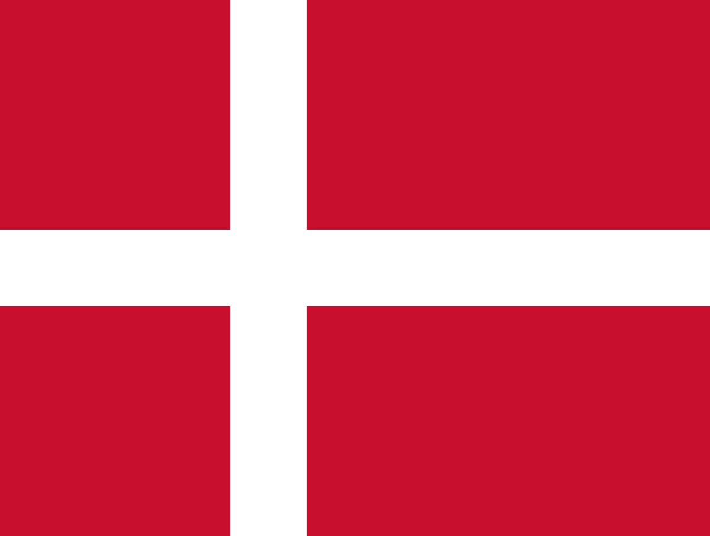

A Seleção Francesa participa de sua 16º edição da Copa do Mundo de Futebol em 2022. A seleção francesa foi campeã do mundo em 1998 e em 2018; vice-campeã em 2006; e terceiro lugar em 1958 e 1986. A França venceu as Eurocopas de 1984 e 2000 e as Copas das Confederações de 2001 e 2003. A seleção de futebol masculino da França é conhecida como Les Bleus (Os Azuis) ou L'Equipe tricolore (A equipe tricolor). A França sediou as Copas do Mundo de 1938 e 1998 (única conquista em Copas do Mundo). A França foi sede dos Jogos Olímpicos de Verão de 1900 e 1924 em Paris e será sede dos Jogos Olímpicos de 2024. A França também foi sede dos Jogos Olímpicos de Inverno de 1924 (em Chamonix) 1968 (em Grenoble) e 1992 (em Albertville).

A primeira seleção australiana foi formada em 1922, durante uma excursão à Nova Zelândia. Durante a digressão, a Austrália sofreu duas derrotas e conseguiu um empate. Austrália, Nova Zelândia, China e África do Sul deveriam organizar jogos teste ou amistosos pelos próximos 25 anos, a fim de popularizar o esporte em seus países. Como a Austrália adotou a política de passagem aérea barata, e por ser isolada geograficamente, a seleção dificilmente jogaria contra adversários de fora da Oceania. Classificou-se para as Copas do Mundo de 1974, 2006, 2010, 2014, 2018 e 2022, e em sete Olimpíadas. A seleção australiana aplicou a maior goleada de que já se teve notícia no futebol internacional: uma vitória por 31 a 0 contra a Seleção da Samoa Americana. O time fazia parte da Oceania até 2005

A Dinamarca fez sua primeira aparição na Copa do Mundo de 1986, com a dupla de ataque Michael Laudrup e Elkjær. A equipe então surpreendeu o mundo, ao vencer na primeira fase os três jogos, contra a Escócia por 1 a 0 e a Alemanha por 2 a 0, além de um inesquecível e histórica goleada de 6 a 1 no Uruguai. Na segunda fase o time enfrentou a forte Espanha e sofreu uma inesperada goleada de 5 a 1, com direito a quatro gols do artilheiro Emilio Butragueño. Apesar da sensação entre imprensa e torcida de que o time merecia ter ido ainda mais longe, a seleção deixou ótima impressão e recebeu a alcunha que se tornaria a definitiva para sua história, pela qual é chamada até hoje: "Dinamáquina".

seleção da Tunísia participa de sua sexta edição da Copa do Mundo de Futebol em 2022. A Tunísia também esteve presente nos mundiais de 1978, 1998, 2002, 2006 e 2018. Em todas as suas participações os tunisianos não passaram da primeira fase. Na Copa do Mundo de 1978 a Tunísia fez história, mesmo não passando da primeira fase. A Tunísia se tornou a primeira seleção africana a vencer uma partida de Copa do Mundo, ao superar o México por 3 a 1 no jogo de estreia em Rosário, Argentina. Na Copa das Nações Africanas a Tunísia foi campeã em 2004.
Países com mais titulos de copas do mundo vencidas
 5 copas do mundo vencidas
5 copas do mundo vencidas
 4 copas do mundo vencidas
4 copas do mundo vencidas
4 copas do mundo vencidas
História da copa do mundo: